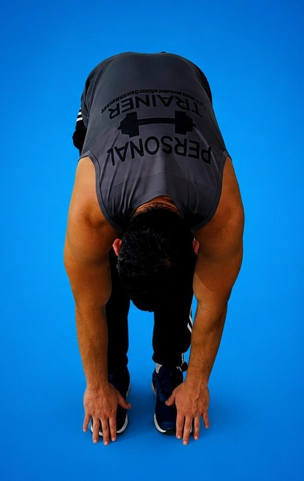
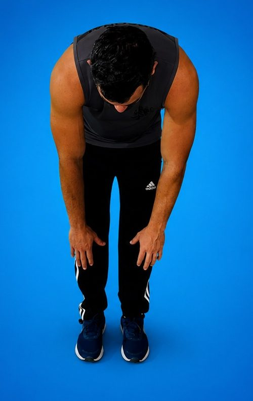
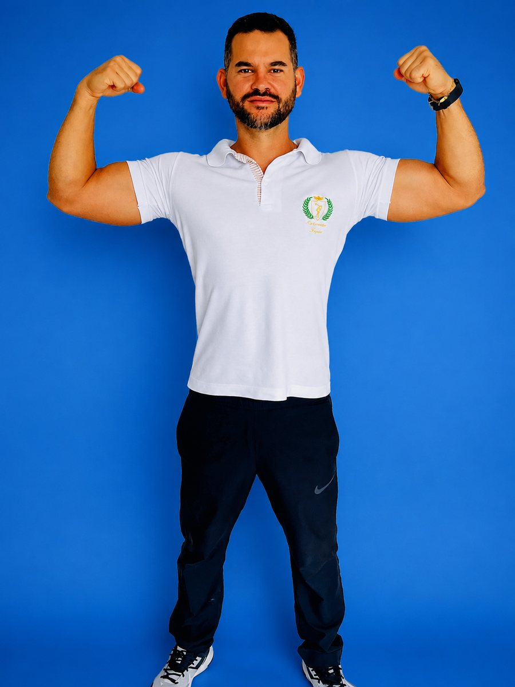

Você alcança de novo
Amarrar o tênis sentado no chão, pegar algo na prateleira de cima, olhar para trás ao dar ré. Amplitude é isso, no dia comum.
Desafio Alongamento 21D · Prof. Daniel Bastos
Não é idade. É amplitude — a que seu corpo tem, mas você parou de usar.
Quinze minutos por dia, vinte e um dias. Um protocolo diário guiado que devolve movimento ao pescoço, à lombar, ao quadril e aos joelhos — sem academia, sem equipamento, na sala da sua casa.

0°Onde a rigidez cobra a conta
Olhar por cima do ombro vira manobra. Dor de cabeça no fim do expediente.
Levantar da cadeira exige apoio. Sentar por uma hora já incomoda.
Agachar para calçar o sapato ficou desconfortável. Passada curta ao andar.
Descer escada dá insegurança. A perna não estica por completo.
O corpo se fecha para frente. A foto denuncia antes do espelho.
A mesma pessoa, o mesmo teste
O teste de flexão de tronco é o mais honesto que existe: você fica de pé, desce, e o chão diz a verdade. É por isso que o 21D começa e termina com ele — para você ver o número mudar, não só imaginar.

Dia 1Registro do Prof. Daniel Bastos. Os graus indicam a inclinação do tronco medida nas fotos e servem de referência visual — resultados variam conforme histórico, frequência e condição de cada pessoa.
O que volta em 21 dias
Amarrar o tênis sentado no chão, pegar algo na prateleira de cima, olhar para trás ao dar ré. Amplitude é isso, no dia comum.
Músculo encurtado puxa articulação e gera dor de repetição. Devolver comprimento tira a tração — e o incômodo diminui junto.
Peitoral e flexores de quadril soltos param de enrolar o tronco para frente. Você fica mais alto sem fazer força para isso.
A sessão termina em respiração e alongamento lento. É o sinal que o sistema nervoso esperava para baixar a rotação.
Como os 21 dias são construídos
Ganho de amplitude não é linear e não vem de esforço. Vem de dose repetida na ordem certa. Cada semana abre uma faixa nova e só avança quando a anterior está confortável.
Semana 1 · Destravar
Sessões curtas e generosas, sem alongamento forçado. O objetivo é tirar a proteção que o corpo criou em volta das articulações paradas e estabelecer o hábito diário.
Semana 2 · Abrir
Posterior de coxa, panturrilha, lombar e flexores de quadril — a corrente que mais encurta em quem passa o dia sentado. É aqui que a maioria sente a virada.
Semana 3 · Sustentar
Ganho que não é usado volta atrás. A última semana integra tudo em sequências fluidas e te entrega uma rotina curta de manutenção para seguir depois do dia 21.

Quem conduz
Professor de Educação Física há mais de dez anos, Daniel montou o 21D depois de repetir a mesma conversa centenas de vezes no atendimento: gente que não queria virar atleta, queria só voltar a se abaixar sem pensar. O protocolo é a resposta curta para esse pedido.
Quem já fez os 21 dias
“As dores nas minhas costas sumiram. Em 21 dias sinto meu corpo mais leve e flexível. O Professor Daniel é incrível.
“Eu não conseguia tocar os pés, e agora sinto uma melhora absurda nos meus joelhos. Super recomendo o desafio.
“Minha postura melhorou muito e minhas dores no pescoço diminuíram. Esse desafio realmente mudou minha vida.
Depoimentos de alunos do desafio adicionar fotos reais dos alunos
O que você leva
Acesso imediato, no celular, tablet ou computador.
De R$ valor cheio por
12xR$ valor
ou R$ à vista no Pix · Cartão, Pix ou boleto
Entre, faça as primeiras sessões e veja como seu corpo responde. Se não for para você, peça o reembolso dentro do prazo pela própria Hotmart e receba 100% de volta — sem formulário, sem justificativa, sem conversa de retenção. definir prazo
Antes de entrar
Sim — o 21D foi desenhado para o ponto zero. A semana 1 assume que você não alcança os pés, não senta no chão sem apoio e não sabe o nome de nenhum movimento. Cada exercício tem versão facilitada, e o Daniel mostra as duas.
Nada obrigatório. Um espaço do tamanho de uma toalha estendida basta. Se tiver um tapete ou uma toalha dobrada para apoiar o joelho, fica mais confortável — mas ninguém precisa comprar nada para começar.
O 21D é um programa de bem-estar e mobilidade, não um tratamento. Se você tem diagnóstico, lesão recente, cirurgia ou dor aguda, converse com seu médico ou fisioterapeuta antes de começar e leve o programa para ele avaliar.
Você retoma de onde parou. O acesso é seu e as sessões ficam liberadas — a numeração é uma sequência sugerida, não uma trava. O que faz diferença é a repetição ao longo das semanas, não a perfeição do calendário.
A sensação de alívio costuma aparecer logo nas primeiras sessões, porque parte da rigidez é proteção muscular e cede rápido. O ganho de amplitude que aparece no reteste é o da semana 2 em diante. Isso varia de pessoa para pessoa.
Assim que o pagamento é aprovado, a Hotmart envia seu login por e-mail. Você assiste pelo navegador ou pelo aplicativo da Hotmart, no celular, tablet, computador ou TV. Se o e-mail não chegar, o suporte resolve em canal de suporte.
Dia 1
Quinze minutos hoje. Depois amanhã. Em três semanas você repete o mesmo teste do dia 1 e vê quanto chão a mais suas mãos alcançam.